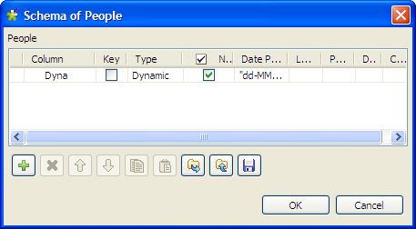
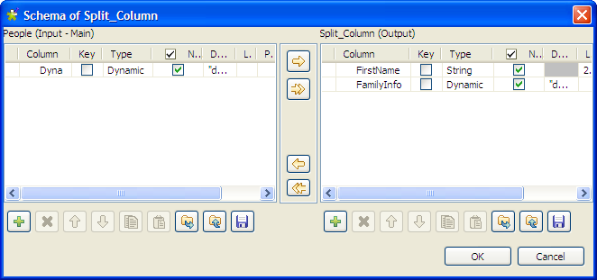
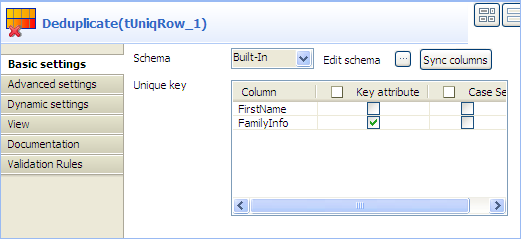
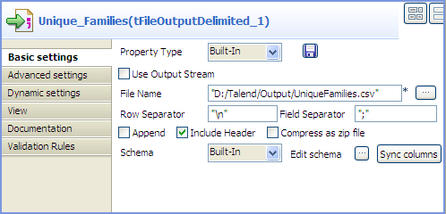
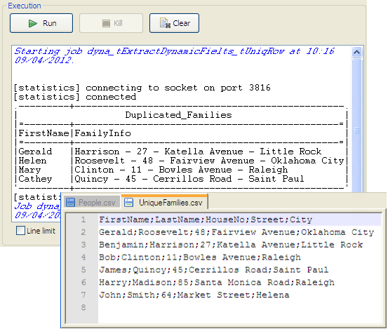

|
Famille de composant |
Data Quality | |
|
Fonction |
Le composant tUniqRow compare les entrées et supprime les doublons du flux d’entrée. | |
|
Objectif |
Ce composant assure une qualité de données des flux d’entrée et de sortie du Job. | |
|
Basic settings |
Schema et Edit schema |
Un schéma est une description de lignes, il définit le nombre de champs qui sont traités et passés au composant suivant. Le schéma est soit local (built-in) soit distant dans le Repository. Si vous utilisez Talend Open Studio for Big Data, seul le mode Built-in est disponible. Cliquez sur Edit Schema pour modifier le schéma. Notez que si vous effectuez des modifications, le schéma passera automatiquement en built-in. Cliquez sur Sync columns pour récupérer le schéma du composant précédent dans le Job. AvertissementSi vous souhaitez supprimer les doublons sur des colonnes en particulier, paramétrez-les dans le schéma. |
|
|
|
Built-in : Le schéma est créé et conservé pour ce composant seulement. Voir également le Guide utilisateur de Talend Data Integration Studio. |
|
|
|
Repository : Le schéma existe déjà et est stocké dans le Repository. Ainsi, il peut être réutilisable dans divers projets et Job designs. Voir également le Guide utilisateur de Talend Data Integration Studio. |
|
|
Unique key |
Sélectionnez dans cette zone une ou plusieurs colonnes sur lesquelles le dédoublonnage sera effectué. - Cochez la case Key attribute afin d’effectuer le dédoublonnage sur toutes les colonnes. - Cochez la case Case sensitive afin de différencier les majuscules et les minuscules. |
|
Advanced settings |
Only once each duplicated key |
Cochez cette case si vous souhaitez envoyer uniquement les premières entrées en doublon des colonnes définies comme clé(s) vers le flux de sortie des doublons. |
|
|
Use of disk (suitable for processing large row set) |
Cochez cette case pour permettre la génération de fichiers temporaires sur le disque dur lors du traitement de données volumineuses. Cela permet d’empêcher l’échec de l’exécution d’un Job dû à un débordement de la mémoire. Quand cette case est cochée, vous devez également définir les éléments suivants : - Buffer size in memory: Sélectionnez le nombre de lignes à mettre en mémoire tampon avant qu’un fichier temporaire ne soit généré sur le disque dur. - Directory for temp files: Indiquez l’endroit où les fichiers temporaires doivent être enregistrés. AvertissementAssurez-vous que le répertoire indiqué pour vos fichiers temporaires existe, sans quoi l’exécution du Job échouera. |
|
|
tStatCatcher Statistics |
Cochez cette case pour collecter les métadonnées de process du Job, aussi bien au niveau du Job qu’au niveau de chaque composant. |
|
Utilisation |
Ce composant est un composant intermédiaire puisqu’il sert à traiter un flux de données. Ainsi, il nécessite un composant d’entrée et un composant de sortie. | |
Ce scénario décrit un Job à cinq composants, dont le but est de trier des entrées à partir d’une liste d’entrée comprenant des noms, de trouver des noms en doublons, et d’afficher les noms uniques ainsi que les noms en doublon dans la console Run.

A partir de la Palette, cliquez et déposez les composants suivants dans l’espace de modélisation graphique : un tFileInputDelimited, un tSortRow, un tUniqRow, ainsi que deux composants tLogRow, et nommez-les comme illustré ci-dessus.
Connectez les composants tFileInputDelimited, tSortRow, et tUniqRow à l'aide de liens Row > Main.
Connectez le tUniqRow au premier tLogRow à l'aide d'un lien Main > Uniques.
Connectez le composant tUniqRow au second tLogRow via une connexion de type Main > Duplicates.
Double-cliquez sur le composant tFileInputDelimited afin d’afficher l’onglet Basic settings de sa vue Component.

Cliquez sur le bouton [...] à côté du champ File Name pour sélectionner le fichier contenant les données d’entrée.
Définissez l’en-tête (Header) et le pied de page (Footer). Dans ce scénario, la ligne d’en-tête est la première ligne du fichier d’entrée.
Cliquez sur Edit schema pour définir le schéma de ce composant. Dans ce scénario, le fichier d’entrée comprend cinq colonnes : Id, FirstName, LastName, Age, et City. Cliquez ensuite sur OK pour propager le schéma et fermer l’éditeur de schéma.
Double-cliquez sur le tSortRow afin d'afficher sa vue Basic settings.

Afin de disposer les entrées en fonction de l’ordre alphabétique des noms, ajoutez deux lignes au tableau Criteria en cliquant sur le bouton [+], sélectionnez les colonnes FirstName et LastName sous Schema column, sélectionnez le type de tri alphabétique (alpha), puis sélectionnez l’ordre ascendant (asc).
Double-cliquez sur le composant tUniqRow afin d’afficher l’onglet Basic settings de sa vue Component.

Dans la zone Unique key, sélectionnez les colonnes sur lesquelles vous souhaitez effectuer le dédoublonnage. Dans ce scénario, les noms en doublon seront triés.
Dans l’onglet Basic settings de la vue Component des deux composants tLogRow, cochez l’option Table afin de visualiser le résultat de l’exécution du Job en mode tableau.

Dans ce scénario, vous utilisez un Job similaire au précédent pour dédoublonner les données d'entrée de plusieurs familles, de telle manière qu'une seule personne par famille reste sur la liste des noms. Comme tous les composants de ce Job supportent le schéma dynamique, vous pouvez utiliser cette option pour gagner du temps en évitant de configurer chaque colonne des schémas.

Déposez les composants suivants de la Palette dans l'espace de modélisation graphique : un tFileInputDelimited, un tExtractDynamicFields, un tUniqRow, un tFileOutputDelimited et un tLogRow. Renommez-les comme ci-dessus pour mieux identifier leur rôle au sein du Job.
Reliez les composants nommés People, Split_Column et Deduplicate à l'aide de liens Row > Main.
Reliez le composant nommé Deduplicate au Unique_Families à l'aide d'un lien Main > Uniques.
Reliez le composant nommé Deduplicate au Duplicated_Families à l'aide d'un lien Main > Duplicates.
Double-cliquez sur le composant nommé People pour afficher sa vue Basic settings.

Avertissement
L'option de schéma dynamique est supportée uniquement en mode Built-In et requiert que le fichier d'entrée ait une ligne d'en-tête.
Cliquez sur le bouton [...] près du champ File Name/Stream pour parcourir votre système jusqu'à votre fichier d'entrée.
Définissez les lignes d'en-tête et de pied de page. Dans ce scénario, la première ligne du fichier d'entrée est l'en-tête.
Cliquez sur Edit schema pour définir le schéma de ce composant.
Dans ce scénario, le fichier d'entrée contient cinq colonnes : FirstName, LastName, HouseNo, Street, et City. Toutefois, comme vous allez profiter de l'option de schéma dynamique, vous n'aurez à définir qu'une seule colonne, ici nommée Dyna. Pour ce faire :
Ajoutez une nouvelle ligne en cliquant sur le bouton [+].
Dans le champ Column, saisissez Dyna.
Dans la liste Type, choisissez Dynamic.
Cliquez sur OK pour propager le schéma et fermer l'éditeur de schéma.
Double-cliquez sur le composant nommé Split_Column pour afficher sa vue Basic settings.
Ce composant vous servira à séparer la colonne du schéma d'entrée en deux colonnes : une pour le prénom et l'autre pour les informations concernant la famille. Pour ce faire :
Cliquez sur Edit schema pour ouvrir la boîte de dialogue [Schema].
Dans la table Output, sur la droite, cliquez sur le bouton [+] pour ajouter deux colonnes dans le schéma de sortie et appelez-les respectivement FirstName et FamilyInfo.
Choisissez String dans la liste Type de la colonne FirstName pour extraire cette colonne du schéma d'entrée et prendre en compte le nom de chaque personne sur la liste des noms.
Sélectionnez Dynamic dans la liste Type de la colonneFamilyInfo pour que cette colonne s'occupe des autres informations de chaque personne présente sur la liste des noms : nom de famille, adresse, rue et ville identifieront une famille.
Cliquez sur OK pour propager les changements et fermer la boîte de dialogue.
Double-cliquez sur le composant nommé Deduplicate pour afficher sa vue Basic settings.
Dans la zone Unique key, cochez la case Key attribute pour la colonne FamilyInfo afin de dédoublonner les informations concernant la famille.
Dans la vue Basic settings du tFileOutputDelimited nommé Deduplicated_Families, définissez le chemin d'accès au fichier de sortie, cochez la case Include header et laissez les autres paramètres tels qu'ils sont.
Dans l'espace de modélisation graphique, double-cliquez sur le tLogRow. Dans sa vue Basic settings, sélectionnez l'option Table pour visualiser les résultats de l'exécution du Job en mode tableau.
Appuyez sur Ctrl+S pour sauvegarder votre Job.
Exécutez le Job en appuyant sur F6 ou en cliquant sur le bouton Run dans l'onglet Run.
Les informations concernant les familles en doublon apparaissent dans la console Run. Une personne par famille s'affiche dans la liste des noms, dans le fichier de sortie.
